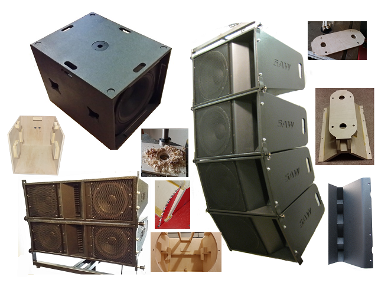

Features:
Options:

For smaller venues or when great music and vocal quality is required at lower volumes in churches and smaller auditoriums, the LA206 is a great match - using dual 6.5" drivers with a 1.4" exit compression driver and a proven HF waveguide designed specifically for line arrays.
And new for 2016, is the LA215 - a large format dual 15" 3 way system for the ultimate a high performance speaker system at a fraction of the cost of most commercial systems of this caliber. The LA215 incorprates a dual 1.4" exit waveguide that has been tighly integrated into the top and bottom cabinet panels allowing very tight and cohesive coupling of the HF section when stacked.
A new addition to the product line is the LA803 which is built around the new Eminence Alpha 3 drivers. This cabinet is easy to build and provides surprisingly articulate sound at volumes perfect for smaller venues.
Overview
Build your own Line Array speakers with a set of these comprehensive and detailed plans.
Sprague Audio Works designs cost-effective, scalable professional audio loudspeakers systems for working pro-sound folks on a budget.
Because you construct the boxes you get big name performance at do-it-yourself prices. Sprague Audio Works designs are proven performers.
We've done all the engineering, all you have to do is make some saw dust and assemble them!
Check out the sample plans
Scalability
We've all seen guys buy loudspeaker systems that are attempts at "one size fits all." And if you've set up enough shows, you know it's more like, "one size fits none!" Because Sprague Audio Works systems are designed to be used in multiples, your system can be just right for the job at hand. Small gigs can be handled with one or two light weight cabinets over a pair of subs. Have a bigger show? No sweat! The LA112 line array rigging system can accommodate up to 8 cabinets. Add as many super efficient SAW-118s as you need to create an earthquake of first octave reinforcement from 35Hz up! Whatever job you have, you can take just the right amount of lightweight, stackable gear.For smaller venues or when great music and vocal quality is required at lower volumes in churches and smaller auditoriums, the LA206 is a great match - using dual 6.5" drivers with a 1.4" exit compression driver and a proven HF waveguide designed specifically for line arrays.
And new for 2016, is the LA215 - a large format dual 15" 3 way system for the ultimate a high performance speaker system at a fraction of the cost of most commercial systems of this caliber. The LA215 incorprates a dual 1.4" exit waveguide that has been tighly integrated into the top and bottom cabinet panels allowing very tight and cohesive coupling of the HF section when stacked.
A new addition to the product line is the LA803 which is built around the new Eminence Alpha 3 drivers. This cabinet is easy to build and provides surprisingly articulate sound at volumes perfect for smaller venues.